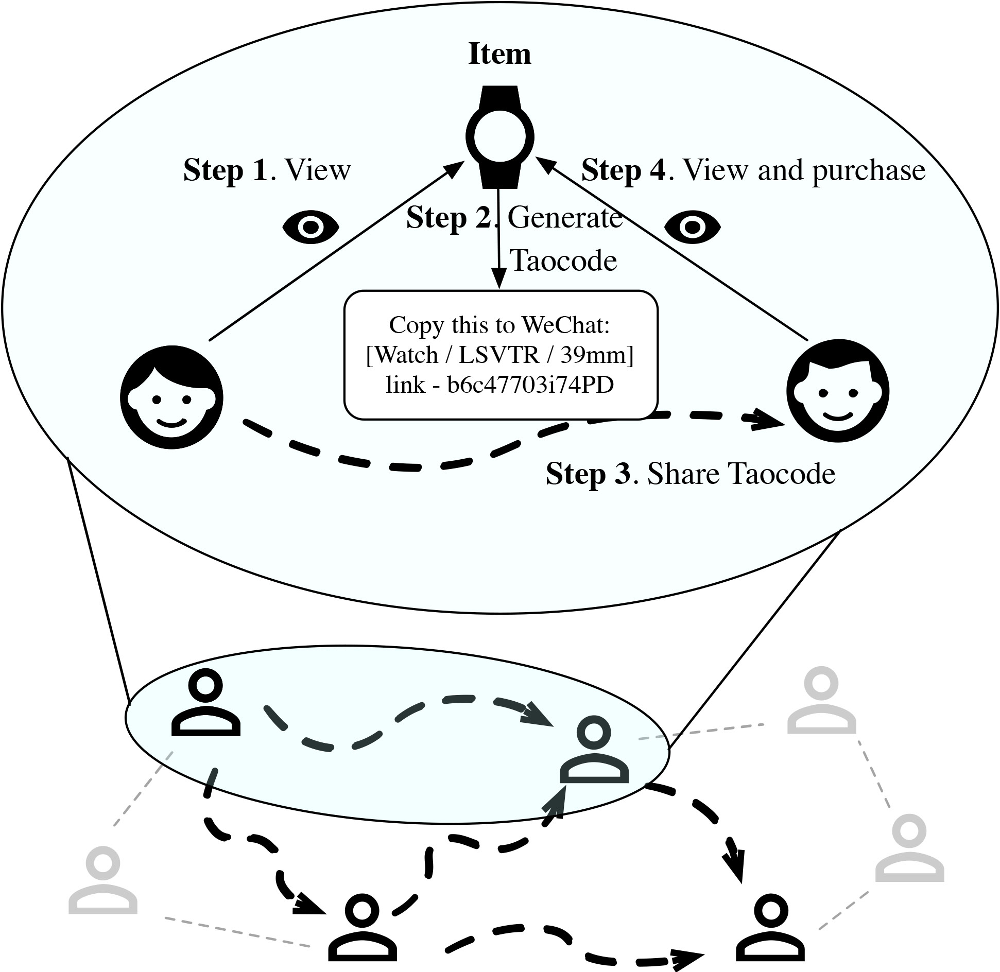
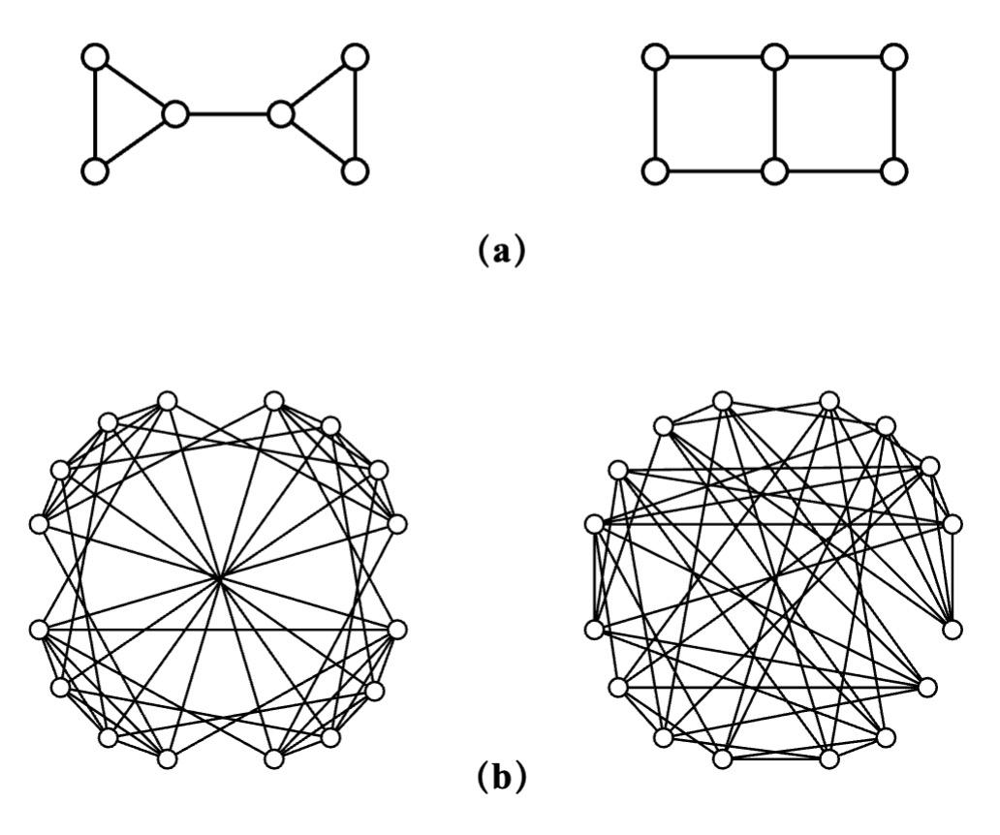
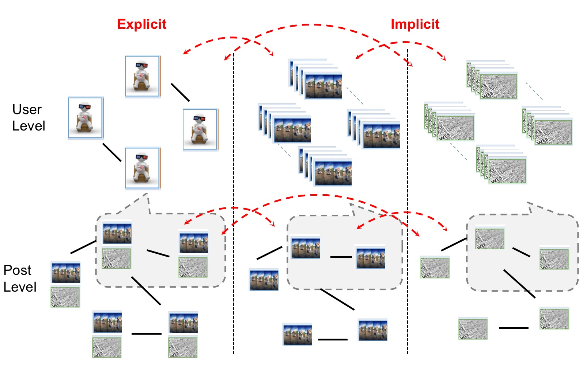

I am currently a second grade master student at Department of computer science and technology, Zhejiang University, advised by Yang Yang. I obtained my bachelor degree from Zhejiang University.
My research interests include graph representation learning, social network analysis and data mining.
xuanyang {at} zju [dot] edu [dot] cn

Finding items with potential to increase sales is of great importance in online market. In this paper, we propose to study this novel and practical problem: rising star prediction. We call these potential items \emph{Rising Star}, which implies their ability to rise from low-turnover items to best-sellers in the future. Rising stars can be used to help with unfair recommendation in e-commerce platform, balance supply and demand to benefit the retailers and allocate marketing resources rationally.
Although the study of rising star can bring great benefits, it also poses challenges to us. The sales trend of rising star fluctuates sharply in the short-term and exhibits more contingency caused by some external events (e.g., COVID-19 caused increasing purchase of the face mask) than other items, which cannot be solved by existing sales prediction methods.
To address above challenges, in this paper, we observe that the presence of rising stars is closely correlated with the early diffusion of user interest in social networks, which is validated in the case of Taocode (an intermediary that diffuses user interest in Taobao).
Thus, we propose a novel framework, RiseNet, to incorporate the user interest diffusion process with the item dynamic features to effectively predict rising stars.
Specifically, we adopt a coupled mechanism to capture the dynamic interplay between items and user interest, and a special designed GNN based framework to quantify user interest.
Our experimental results on large-scale real-world datasets provided by Taobao demonstrate the effectiveness of our proposed framework.

Lockdown is a common policy used to deter the spread of COVID-19. However, it remains an open question how our society comes back to life after a lockdown. Understanding how cities bounce back from lockdown is critical for promoting the global economy and preparing for future pandemics. Here we propose a novel computational method based on electricity data to study the recovery process, and conduct a case study on Hangzhou. With the designed Recovery Index, we find a variety of recovery patterns in main sectors. One of the main reasons for this difference is policy, therefore, we aim to answer the question of how policies can best facilitate the recovery of society.
We first analyze how policy affects sectors and employ a Change-point Algorithm to provide a non-subjective approach to policy assessment. Furthermore, we design a model that can predict future recovery, allowing policies to adjust accordingly in advance. We design a deep neural network TPG to model recovery trends, which consists of the graph structure learning to perceive influences between sectors. With the model, we conduct simulation experiments and results offer insights to policy-making that the government should prioritize supporting sectors that have greater influence on others and are influential on the whole economy. ([Tao and Xu et al, KDD'18];[Xu et al, TKDD'20]).

Designed DeepGraphlet with k-tuple feature and multi-task to estimate the graphlet counting.
Experiments on real graphs demonstrate that our method improves the estimation accuracy 60+%.
It achieves 20x speedup on hundreds of millions-scale graphs, and handles graphs with billions of edges.
Design a streaming model for large-scale dynamic graph setting, which aims to solve the problem of space collapsing over time.

Introduce the graph modal into the multimodal learning on social media data, create a new large-scale multimodal dataset.
Design a multi-step graph alignment pretrain task to improve the understanding of user, image and text information.
A momentum distillation model for data augmentation.
Xuan Yang, Yang Yang, Chenhao Tan, Yinghe Lin, Zhengzhe Fu, Fei Wu, Yueting Zhuang.
Unfolding and Modeling the Recovery Process after COVID Lockdowns. Submitted to Nature Human Behavior. [PDF]
Xuan Yang, Yang Yang, Jintao Su, Yifei Sun, Shen Fan, Zhongyao Wang, Jun Zhan, and Jingmin Chen. Who's Next: Rising Star Prediction via Diffusion of User Interest in Social Networks.
In IEEE Transaction on Knowledge and Data Engineering, doi: 10.1109/TKDE.2022.3151835, 2022 [PDF]
Jintao Su, Yang Yang, Xuan Yang, Yuxiao Dong and ChilieTan。
”DeepGraphlet:Estimating Local Graphlet Frequencies with Graph Neural Networks”.
IEEE Transaction on Knowledge and Data Engineering Submission.
Teng Ke, Yang Yang, Shiliang Pu, Xuan Yang, Quanjin Tao, Yifei Sun, Weihao Jiang, Hui Wang and Yingye Yu.
"Detecting Telecommunication Frauds by Human-in-the-Loop Graph Neural Networks".
IEEE Transaction on Knowledge and Data Engineering Submission.
Taoran Fang, Zhiqing Xiao, Chunping Wang, Jiarong Xu, Xuan Yang, Yang Yang.
DropMessage: Unifying Random Dropping for Graph Neural Networks. NeurIPS 2022 Conference Submission.